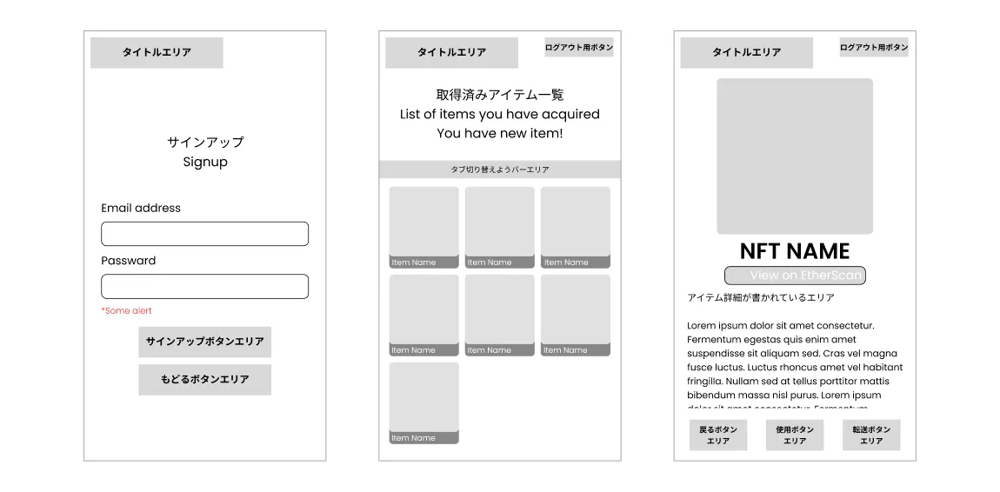
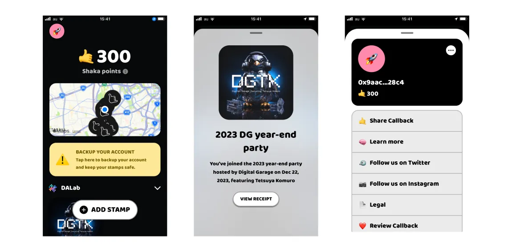
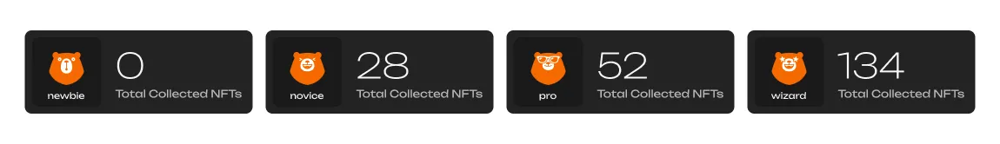
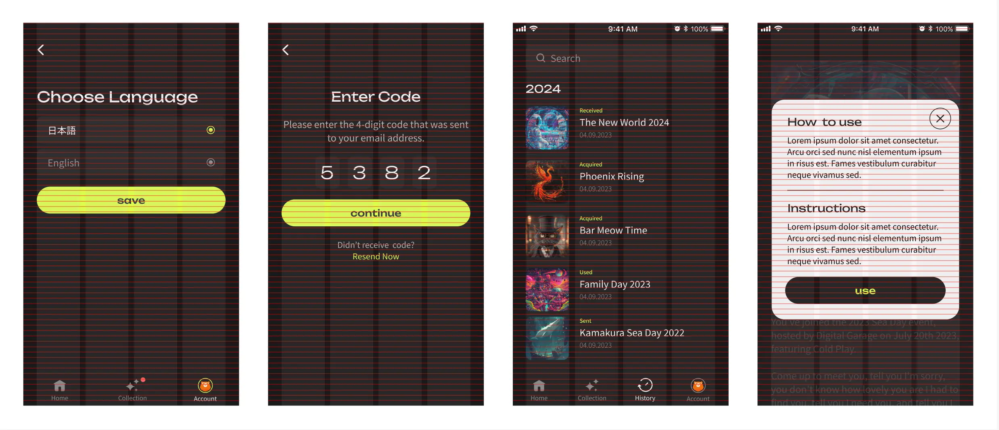
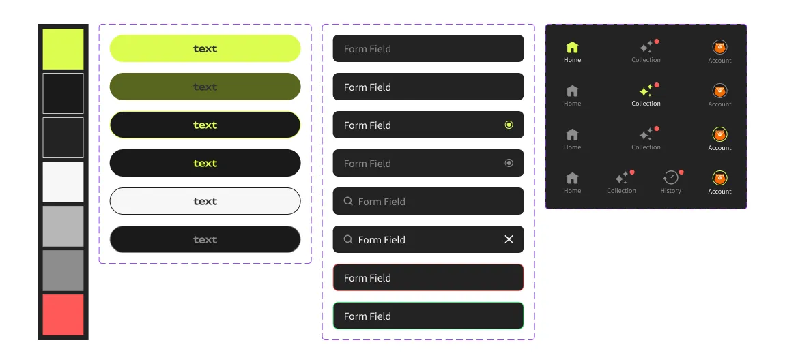

mahola wallet
プロダクトデザイン
mahola walletは、デジタルアセットを管理・操作するための社内向けNFTコレクションアプリです。ビジュアルアイデンティティ、ユーザーフロー、機能セット、インタラクションシステムまで、プロダクトデザイン全体をゼロからリードしました。
背景
Digital GarageはNFTを活用したコミュニティツールの検討を行っており、社内でのNFTリテラシー向上を目指していました。初期プロトタイプにはミント機能があるものの、一貫したユーザー体験がなく——アセットの管理、パスワードリセット、言語切り替えもできない状態でした。最初のミント後にエンゲージメントが落ちていました。
調査

これが出発点——エンジニアが作成したワイヤーフレームで、どの画面が存在するかは定義されていますが、実際のUXは未定義のまま。ナビゲーションモデル、アクション階層、空状態、エラーフローはすべて未定義でした。それらの判断を行うことが私の仕事でした。

日本市場で最も近い競合プロダクトは、mahola がローンチした頃にはすでにサービスを終了していました。そのUIを見て、核心的な問題が明確になりました：ゲーミフィケーション（ポイント、マップ）を前面に出しながら、実際のアセットであるNFT自体を埋もれさせていたのです。ユーザーには「スタンプを持っている」から「それが何の価値を持ち、どう使えるか」への明確な導線がありませんでした。この観察が、mahola のダッシュボードをポイントシステムではなくアセットコレクションで始める判断につながりました。
主な判断
01. カラム数 エンジニアのデフォルトは3カラムグリッドで、スペースの効率的な使い方でより多くのアイテムが一度に見えます。それに異議を唱えました。このコンテキストでのNFTは管理するファイルではなく、思い出の品です。3列では作品がサムネイルになってしまう。2列なら実際に鑑賞できるものになります。レイアウトは、画面に何個収まるかではなく、ユーザーがコレクションに対してどう感じるかを反映する必要がありました。
02. ゲーミフィケーション ブリーフはmaholaの遊び心あるブランドキャラクターを反映した楽しい体験を求めていました。「楽しさ」をビジュアルスタイルだけで解釈するのではなく、マスコットを中心にしたプログレッションシステムを提案しました。クマはすでにステッカーアセットのシリーズとして存在していました。それらをNFT獲得数に連動したランクシステムに結びつけました：Newbie、Novice、Pro、Wizardの4段階で、それぞれがクマのビジュアル状態として表現されます。Wizardはスター目になります。ゲーミフィケーションはブランドの上に乗せたものではなく、ブランドを通じて表現されたものです。さらに、ランク構造はリデザインなしに将来のティア別特典の基盤にもなりました。

03. お気に入り お気に入りタグはブリーフに含まれていませんでした。自分自身がコレクターとして追加しました。コレクションが増えていく中で、最も大切なアイテムを見つけるのにすべてをスクロールする必要があってはなりません。あるNFTはトロフィーであり、あるものはユーティリティです——重要なものへの素早いアクセスが必要です。
デザイン
ビジュアル方針はNFTのアートワーク自体から導きました。作品は鮮やかで色彩豊か、ディテールが細かい——ライトなUIだと競合してしまいます。ダークモードにすることでアートワークを主役にし、ネオンイエローを単一のアクセントカラーとしてmaholaのエネルギッシュなブランドキャラクターをインターフェース全体に通しました。
3つのタブ、それぞれ一つの役割。ホームはコレクションの活動を一目で把握でき、コレクションはNFTを前面に出し、アカウントはその他すべてを管理します。2カラムグリッドは各作品をデータポイントではなくアートワークとして存在させる余白を与えます。

ランクプログレッションシステムは初回ログイン時とランク変更時にモーダルとして表示されます。クマがメッセージそのもの——長い説明は不要です。ユーザーはレベルアップしたことを即座に理解します。

元のワイヤーフレームは3つの画面を定義していました。最終プロダクトは全体の表面積をカバーしています——空状態、エラーフロー、パスワードリセット、アカウント削除、言語切り替え、確認フロー。コレクションの空状態には汎用的なプレースホルダーではなく、困ったクマを使用し、まだ何もない状態でもブランドの声を一貫させました。

開発連携
エンジニアとして受け取りたい形にFigmaファイルを整えました。スペーシングとタイポグラフィはTailwindのスケールに合わせており、デザイントークンが推測なしにコードに直接変換できます。各コンポーネントには状態を定義しました——デフォルト、アクティブ、エラー、無効。ボタントランジションとスプラッシュアニメーションはコメントや口頭説明ではなく、コンポーネントライブラリ内に記録されています。Figmaファイルとビルドのギャップをできるかぎり小さくすることが目標でした。


成果
アプリは社内で約320名に利用されています。カフェがこのプラットフォームを通じた月次NFTキャンペーンを実施しており、ブランドがコミュニティと関わる定期的な仕組みになりました。プロダクトは一貫したユーザー体験のない未完成のプロトタイプから、毎月開いてもらえるものへと変わりました。それがゴールでした。
振り返り
渡されたワイヤーフレームをそのままスコープとして信じて、すぐにデザインを始めてしまいました。実際にはそうではありませんでした。パスワードリセット、アカウント削除、言語切り替え、エラー状態——足りない機能がデザインフェーズで一つずつ表面化しました。そのたびに、すでに確定したと思っていたフローを見直す必要がありました。次回はFigmaに触れる前に、より大まかでも完全な機能マップを求めます。ホワイトボードのスケッチでも、コンポーネントライブラリよりも早く抜け穴を発見できます。